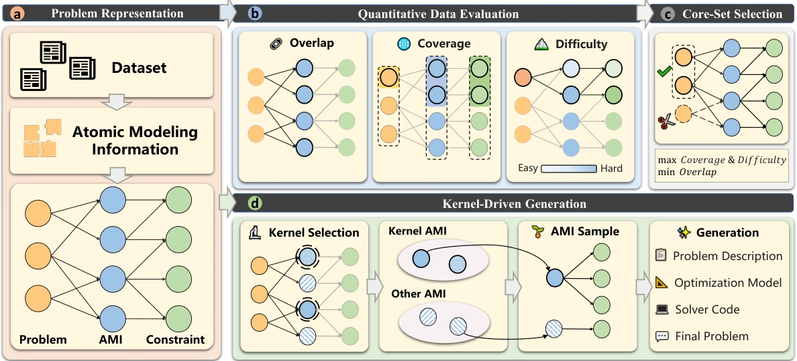

Opt-Arena: Evaluating, Selecting, and Generating Optimization Modeling Data via Tripartite Graphs
Opt-Arena links optimization problems, atomic modeling information, and constraint types in a tripartite graph to assess datasets, curate examples, and generate data for underrepresented problem types.

Opt-Arena extracts atomic modeling information from problems, links it to constraint types, and uses the resulting structure for evaluation, selection, and generation.
01 / Research question
Dataset size alone does not show how many distinct modeling rules are represented in natural-language optimization problems. Repeated structures can dominate evaluation and training, while uncommon constraints receive little attention. Aggregate scores may then say less about performance across different formulation structures. This work examines how to measure coverage, difficulty, and repetition at a finer level, and how to use those measurements to select examples and generate data for scarce problem types.
02 / Approach
The framework first extracts Atomic Modeling Information (AMI) from problem descriptions and associated constraints. Each AMI expresses a self-contained rule needed to formulate a constraint. It then connects problem instances, AMIs, and constraint types in a tripartite graph and measures structural coverage, overlap, and difficulty. A greedy procedure builds an evaluation set by favoring difficult problems that introduce unseen AMIs or scenarios. For training, a pruning procedure removes lower-value, repetitive instances while retaining the source pool’s structural coverage. To augment a scarce problem type, the generation pipeline samples a kernel of essential constraints, adds compatible AMIs, and prompts a large language model to produce a problem description and formulation.
03 / Research scope
The work studies data for translating natural language into optimization formulations, primarily linear and mixed-integer linear programming structures. It evaluates data selection and generation on several modeling benchmarks and the new Opt-Arena Eval set, using supervised fine-tuning with different model initializations. The reported results support the approach in these settings. The authors also note that generated problems may contain mathematical errors or infeasible boundary conditions; validity is not guaranteed for every instance.
Experimental results
Structural profile of the evaluation set
| Dataset | Instances | Problem types | Constraint types | AMIs | AMI coverage (%) |
|---|---|---|---|---|---|
| MAMO ComplexLP | 211 | 15 | 24 | 82 | 12.56 |
| OptMATH (test) | 166 | 16 | 37 | 167 | 25.57 |
| Opt-Arena Eval | 405 | 55 | 46 | 653 | 100.00 |
Opt-Arena Eval was selected from the combined candidate pool to preserve its identified structures. Its 100% coverage is relative to that pool, not a guarantee about all possible optimization problems.
The 405-instance set covers the 55 problem types, 46 constraint types, and 653 AMIs identified in the combined pool, providing a compact set for examining different formulation structures.
Sample efficiency of structural selection
| Method | Training examples | Macro average |
|---|---|---|
| K-Center | 20000 | 47.4 |
| Perplexity | 20000 | 47.6 |
| Opt-Arena | 5000 | 48.5 |
The model architecture and training procedure are held fixed; baseline values are shown in Figure 3, and the Opt-Arena 5k result also appears in Appendix Table 7.
In this training setup, 5,000 structurally selected examples yield a higher macro-average accuracy than either selection baseline using 20,000 examples.
Model performance across benchmarks
| Method | MAMO ComplexLP | OptMATH | Opt-Arena Eval | Macro average |
|---|---|---|---|---|
| GPT-4o | 45.2 | 20.5 | 45.2 | 53.4 |
| DeepSeek-V3 | 53.2 | 23.4 | 51.8 | 56.5 |
| OptMATH (7B, SFT) | 51.2 | 24.4 | 39.3 | 52.0 |
| SIRL (7B, RL & Reasoning) | 62.1 | 29.0 | 41.0 | 58.7 |
| Opt-Arena 4B (SFT) | 45.5 | 25.3 | 42.5 | 54.0 |
| Opt-Arena 7B (SFT) | 59.2 | 29.0 | 45.7 | 58.9 |
Selected methods and dataset columns from Table 1 are shown; macro averages still use all eight columns. Opt-Arena 4B uses two-stage SFT from Qwen3-4B-Instruct, while 7B continues from OptMATH-7B in Stage 2. These methods do not share a controlled backbone.
Opt-Arena 4B and 7B reach macro averages of 54.0% and 58.9%, respectively. Relative performance varies by benchmark, so these results describe the reported evaluation settings rather than a general advantage across tasks or model architectures.
Selection and generation ablations
| Method | Stage 1 |
|---|---|
| Full selection | 50.7 |
| Without difficulty | 47.3 |
| Without overlap | 46.4 |
| Without coverage | 48.2 |
| Uniform sampling | 46.9 |
Stage 1 ablations from Table 2; the full Stage 2 pipeline reaches 54.0%, versus 50.5% without generation.
Removing any structural metric lowers the Stage 1 macro average, while generation adds a further Stage 2 gain under the reported conditions.
Targeted generation by problem type
| Method | Accuracy after training | Gain (points) |
|---|---|---|
| Maximum Flow (MFP) | 44.44 | 15.55 |
| Facility Location (FLP) | 65.57 | 16.39 |
| Aircraft Landing Scheduling (ALSP) | 40.00 | 26.67 |
Each row is a separate type-specific generation and training configuration, not a single joint training run.
All three targeted configurations improve the reported accuracy for their respective problem types under the tested conditions.
Citation
@inproceedings{optarena2026,
title = {{Opt-Arena: Evaluating, Selecting, and Generating Optimization Modeling Data via Tripartite Graphs}},
author = {Yian Xu and Xiongwei Han and Jie Wang and Haoyang Liu and Yuyang Cai and Boxuan Niu and Mingxuan Yuan},
booktitle = {The Fortieth Annual Conference on Neural Information Processing Systems},
year = {2026},
url = {https://openreview.net/forum?id=HKMOHcifiP}
}